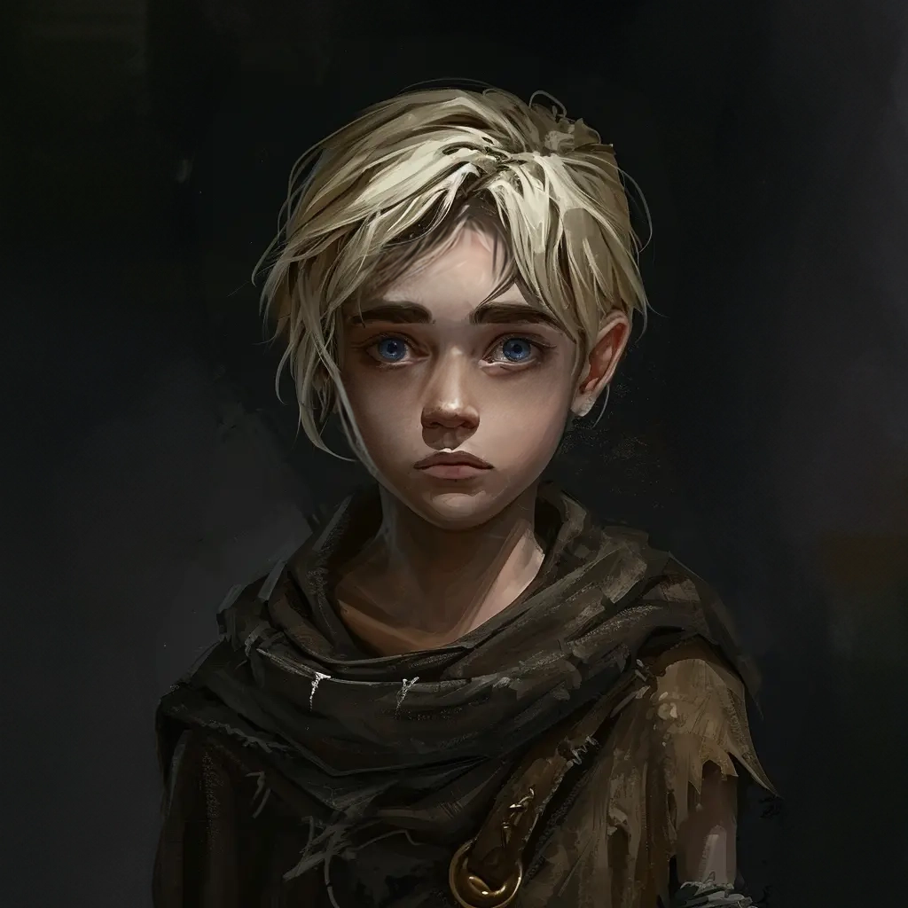

NSCs
Freek
Waisenkind aus der Hexenmühle, nun im St. Andrals Waisenhaus.

13 Jahre
KI-Zusammenfassung
Beruf / Rolle
Waisenkind aus der Hexenmühle, nun im St. Andrals Waisenhaus.
Beschreibung
Keine gesicherte textliche Beschreibung in den lokalen Notizen.
Beziehungen
- Waisenkind aus der Hexenmühle, nun im St. Andrals Waisenhaus
- Quest: Faddey mit Shared/Rabenhorst/2 - NSCs/Vallaki/St. Andrals Waisenhaus/Waisenkinder/Freek zusammen zum St. Andrals Waisenhaus in Vallaki bringen
- St. Andrals Waisenhaus: Wir haben die Kinder Faddey und Shared/Rabenhorst/2 - NSCs/Vallaki/St. Andrals Waisenhaus/Waisenkinder/Freek dorthin gebracht
- Shared/Rabenhorst/2 - NSCs/Vallaki/St. Andrals Waisenhaus/Waisenkinder/Freek | St. Andrals Waisenhaus
Historie
- Waisenkind aus der Hexenmühle, nun im St. Andrals Waisenhaus